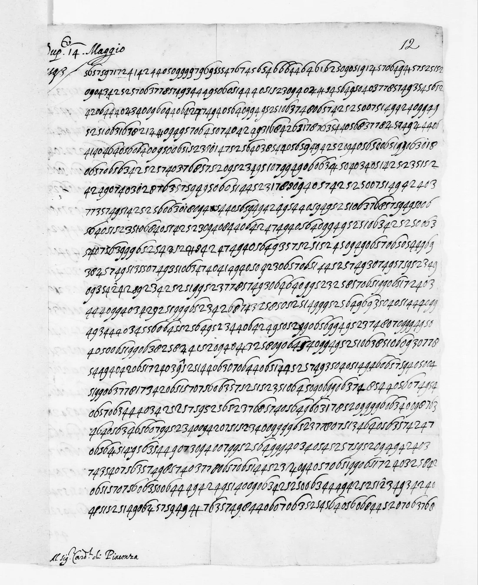

Tweede dossier · Pauselijke correspondentie
De legaat Sega en de instructie van Rome, 14 mei 1593
Twaalf pagina’s geheel bedekt met cijfers, vanuit Rome gestuurd aan de pauselijke legaat in Parijs op het moment dat de Staten van de Ligue een katholieke koning zoeken. Wij stellen er een waarschijnlijke en gedeeltelijke ontcijfering van voor: de algemene betekenis tekent zich duidelijk af, maar veel passages blijven onvolledig of onzeker.
Update — 23 oktober 2026 (naar Tomokiyo 2019). Onze lezing is regel voor regel uitgelijnd op de voorlopige lezing die Satoshi Tomokiyo in 2019 in Cryptologia publiceerde.[1] Op de uitgelijnde plaatsen lezen we in 98 % van de gevallen dezelfde letter. De verschillen kwamen vooral uit onze transcriptie: op 27 plaatsen hadden we 0 gelezen voor 6 of 6 voor 0. We hebben ze gecorrigeerd naar Tomokiyo 2019; ze stemmen alle met de betekenis overeen (frutto, sopra, ancora, figliola, manifestamente, forze, ministri, ultimamente, estremamente…). Twee letterwaarden komen ook uit zijn tabel: 97 = s en 61 = b. Verscheidene lezingen veranderen: anzi in rispetto (en niet dispetto), all’hora saria impossibile (en niet all’huomo), di dire, ma pericolosissimo. Deze versie verwerkt ook herlezing nr. 4 van Brice Dudout (22 oktober). Op de pagina Documenten zijn deze correcties met een stippellijn onderstreept.
Update — 21 oktober 2026 (herlezing nr. 3). De 83 punten die twijfelachtig waren gebleven (geraden codewoorden en breuken) zijn op de afbeelding herlezen door Claude (Opus 5.5) en daarna onafhankelijk nagelezen door Claude Fable: de twee herlezingen stemmen op 80 punten overeen. De correcties betreffen vooral niet-opgemerkte nullen. Het aantal breuken daalt van 39 naar 27, dat is ongeveer 0,2 % van de cijfers. Drie woorden uit de nomenclator zijn vastgesteld: 016 = regno (9 voorkomens), 540 = principi en 09 = per la. De omkaderde 17 is een bepaald lidwoord (il, la of le). Nieuwe passages worden leesbaar, bijvoorbeeld infiniti parlano più liberamente, senza pericolo e disordine of aspirare alla Infanta. Deze herlezing is door een model op de afbeelding gedaan, niet door een mens; Brice Dudout moet haar nog bevestigen.
Update — 20 oktober 2026 (herlezing nr. 2). Brice Dudout heeft op de afbeelding 157 nieuwe twijfelpunten herlezen. De doorgestreepte 4’en, de tekens die 4 en 2 vermengen en de „9 met hoedje” blijken nullen te zijn; de 0 met punt geldt als 0. De breuken in de lezing dalen van ongeveer 2 % naar minder dan 0,5 % van de cijfers. Twee woorden uit de nomenclator zijn geïdentificeerd (75 = con, 12 = il), en nieuwe passages worden leesbaar. De vorige versie, van 20 oktober ’s ochtends, wordt bewaard in het onderzoeksdossier.
Synthese: een waarschijnlijke en gedeeltelijke ontcijfering
Wat wij voorstellen. Het versleutelingssysteem is geïdentificeerd. Het omvat nullen, cijferparen voor de letters en nomenclatorgetallen die door nullen worden omsloten. De sleutel staat vast genoeg om lange passages in het Italiaans te lezen. Ze vormen een doorlopende tekst die samenhangt met de situatie van mei 1593.
Wat wij niet voorstellen. Het gaat niet om een volledige tekst of een definitieve uitgave. Verscheidene getallen van de nomenclator hebben nog geen waarde. Ongeveer 0,2 % van de getranscribeerde cijfers vormt nog breuken. Sommige woorden zijn aangevuld. De lezing wordt in opeenvolgende rondes verbeterd; deze pagina geeft de stand van 23 oktober 2026, na de vergelijking met de lezing van Satoshi Tomokiyo (2019).
Eerder werk. Satoshi Tomokiyo heeft dit stuk bestudeerd samen met twee andere doorlopende versleutelde teksten uit 1593. Hij gaf er de segmentatie en een voorlopige ontcijfering van in Cryptologia 43(1), 2019.[1] Satoshi Tomokiyo heeft ons dit artikel op 22 oktober 2026 toegestuurd. Het stelt de nullen vast (3 en 8, doorgestreepte cijfers), het versleutelingsalfabet en, in een bijlage, een doorlopende voorlopige lezing van deze instructie en van de brief uit Parijs van 15 mei (nr. 8). De segmentatie, het alfabet en de eerste lezing van deze stukken komen hem toe. Ons werk, verricht zonder het artikel te kennen, vindt ze onafhankelijk terug. Het voegt er de waarde van nomenclatorgetallen aan toe die het artikel openliet, zoals 426 Navarra, 017 Infanta, 002 Zijne Heiligheid, 007 Spanje, 77 che, 74 et en 76 non, alsook de vertaling en het historische commentaar. In onze volgende rondes leggen we onze lezing teken voor teken naast de zijne.
Mei 1593: de Ligue zoekt een koning
Sinds de moord op Hendrik III in 1589 is de volgens de opvolgingsorde rechtmatige koning Hendrik van Navarra, een protestant. De katholieke Ligue weigert hem te erkennen. In januari 1593 roept zij in Parijs Staten-Generaal bijeen om een katholieke koning te kiezen. Filips II van Spanje schuift de kandidatuur van zijn dochter naar voren, de infante Isabella Clara Eugenia, via haar moeder een kleindochter van Hendrik II. Eind april begint in Suresnes een conferentie tussen ligueurs en koningsgezinden. Op 25 juli 1593 zal Hendrik IV in Saint-Denis het protestantisme afzweren.
Paus Clemens VIII wordt in Parijs vertegenwoordigd door kardinaal-legaat Filippo Sega, bisschop van Piacenza, vandaar zijn titel „kardinaal van Piacenza”. Het hier bestudeerde stuk is een instructie die vanuit Rome aan de legaat is gestuurd. Ze beantwoordt zijn verzoeken punt voor punt.
Het document
In de marge van het eerste blad: „Dup.to 14 Maggio 1593”, dat wil zeggen het duplicaat van een depêche van 14 mei 1593. Onderaan: „Al sig. Card.le di Piacenza” (aan de heer kardinaal van Piacenza). De rest, twaalf pagina’s en ongeveer 14.500 cijfers, is geschreven in doorlopende Arabische cijfers, zonder zichtbare scheiding. De catalogus van de BnF en Cryptiana beschrijven het stuk als geheel versleuteld.

Hoe de tekst is versleuteld
- Nullen. De 3 en de 8 tellen niet mee: ze zijn overal verspreid, ook midden in woorden, om de woordgrenzen te verdoezelen. Sommige bijzondere tekens spelen dezelfde rol: de doorgestreepte 4 (die 4 en 1 vermengt), de „doorgestreepte 4 met 2” (die 4 en 2 vermengt), de 9 met een hoedje erboven en andere samengestelde tekens. Als cijfers gelezen zouden ze de lezing breken. De 0 met punt telt daarentegen als een 0.
- Paren voor de letters. Zodra de nullen zijn verwijderd, leest men de tekst in cijferparen. Elk paar staat voor een letter, en de frequente letters hebben meerdere mogelijke paren (homofone substitutie). Bijvoorbeeld: 40 = a, 06 = e, 49 = i, 52 = o, 51 = n, 57 = s.
- Een kleine nomenclator. Frequente of gevoelige woorden worden genoteerd met een getal van twee of drie cijfers, omsloten door twee nullen. Zo is „3 77 8” = che, „3 74 8” = et, „3 76 8” = non, „3 75 8” = con, „3 12 8” = il. Herlezing nr. 3 stelt er nog andere vast: 016 = regno, 540 = principi, 09 = per la. De omkaderde 17 dient als bepaald lidwoord (il, la of le; waarschijnlijke waarde). De punt op de 0 van sommige codewoorden (01 = in, 02) verandert hun waarde niet. De eigennamen volgen hetzelfde procedé: 426 staat zeer waarschijnlijk voor Navarra (Hendrik IV) en 017 voor de infante.
Het is niet het cijfer van de brief die de volgende dag, 15 mei, uit Parijs werd verstuurd en in hetzelfde deel wordt bewaard (f. 22). Die brief krijgt een aparte lezing, die nog loopt.
Wat Rome de legaat schrijft
Samenvatting in modern Nederlands van de waarschijnlijke lezing; de aanhalingen zijn vertalingen. De genummerde punten volgen de volgorde van het document; niet gelezen passages zijn weggelaten, niet gereconstrueerd.
- Geen nieuwe, uitdrukkelijk afgekondigde excommunicatie. De ligueurs vragen dat de excommunicatie van de aanhangers van Navarra plechtig wordt afgekondigd. Rome acht de maatregel nutteloos, en op dit moment zelfs schadelijk. Men heeft weinig acht geslagen op het vonnis dat al tegen Navarra is uitgesproken en op het pauselijke monitorium dat sindsdien is gepubliceerd. De kerkelijke straffen worden geminacht, en ze vernieuwen zou het apostolische gezag alleen nog meer belachelijk maken. De kerkelijke straffen zijn „geneeskrachtig”, zeggen de canonisten. Een formele afkondiging zou verplichten ieder persoonlijk te dagvaarden, wat vol moeilijkheden en gevaren is. Vooral zou ze de betrokkenen in een schisma kunnen drijven.
- De katholieken in het koninklijke kamp niet tot wanhoop brengen. Men zou alle hoop verliezen hen van Navarra los te maken. Sommigen worden er „als gevangenen” vastgehouden, en Zijne Heiligheid weet dat er onder hen zijn die geen schuld treft.
- Een huis van de opvolging uitsluiten. Vonnissen dienen nergens toe zonder de macht om ze ten uitvoer te leggen; dat ziet men bij Navarra en bij de protestantse vorsten. Rome wil geen enkele goedkeuring geven zonder eerst te zijn geraadpleegd. Het vreest de rivaliteit tussen de leiders van de Ligue.
- De derde partij. Rome overweegt dat men misschien „een prins van den bloede” of een „derde partij” moet nemen. Het vraagt wie naar de hand van de infante moet dingen. Een katholieke vorst wiens geloof vaststaat, zou niet kunnen worden geweigerd.
- De aanspraak van de infante en de Salische wet. De paus heeft de memories ten gunste van de infante gezien die „Pegna” hem heeft getoond. Vermoedelijk gaat het om de Spaanse canonist Francisco Peña; dat is een identificatiehypothese. „Iedere middelmatige doctor, zonder een boek open te slaan”, zou erop kunnen antwoorden. De Salische wet, ook al was ze niet geschreven, is dat wel „in de harten”. Sinds Clovis heeft geen enkele vrouw de kroon geërfd, en de gewoonte en de instemming van de volkeren hebben altijd de mannen geroepen.
- De Spaanse bedoelingen. De Spanjaarden zeggen te strijden ter verdediging van de Ligue. Hun tegenstanders antwoorden „met volle mond” dat men nu ontdekt dat het niet om de godsdienst ging. Rome vreest dat beide partijen omslaan. Het verdenkt Spanje ervan Navarra nooit te hebben willen verslaan, maar alleen de ene en de andere partij te hebben willen losmaken, zodat uiteindelijk alles in zijn handen zou vallen (waarschijnlijke lezing).
- Wat te vrezen valt. Navarra zou de katholieken voor zich kunnen winnen „onder het mom van een geveinsde bekering”. Men zou ook een andere prins van den bloede kunnen nemen, of de Staten zouden kunnen voortslepen zonder te besluiten, of uiteengaan zonder iets te doen. Ondanks zijn geringe krachten zal de Heilige Stoel „de publieke zaak nooit in de steek laten”.
- De gedragslijn tegenover Spanje. De legaat mag de aanspraak van de infante steunen, maar alleen als dat „zonder gevaar voor wanorde” kan, met een persoon die de Fransen welgevallig is. De bedoeling van de paus blijft „het behoud van de godsdienst”.
Enkele passages in het Italiaans
Ontcijferde tekst, spelling licht genormaliseerd en interpunctie van de uitgever. Vierkante haken markeren nomenclatorwaarden of aanvullingen; „…” markeert een lacune.
… si va a pericolo evidentissimo di [danno], poi che potriano … traboccarsi in … uno scisma …
… [S. S.] dice che le informationi che ha visto a favore della [Infanta], mostrateli da Pegna, … non però tali, che ogni mediocre dottore, senza rivoltar libri, ci potria rispondere … quando bene la legge salica non si trovasse scritta, è però scritta [nei] cuori …
… da Clodoveo in qua … non hanno mai visto donna succedere alla corona, et più d’una volta è uscito il regno d’una famiglia et passato in un’altra …
… si potesse debellar [Navarra], ma solo staccar l’una parte et l’altra, acciò nell’ultimo gli habbino da capitar nelle mani …
… sotto colore di finta conversione aderisse a [Navarra], o si pigliasse un altro del sangue, o andasse in lungo senza concludere … le deboli forze della Sede apostolica, non abbandonerà mai la causa publica …
… non servono a niente, come vediamo in [Navarra] … nei [principi] protestanti …
… della religione non solo in quel [regno], ma ancho negl’altri …
Hoe de lezing is verkregen
- Transcriptie. De twaalf pagina’s zijn cijfer voor cijfer overgenomen van de hogeresolutie-opnamen van Gallica, waarbij de doorgestreepte en samengestelde tekens apart werden genoteerd.
- Identificatie van het systeem. Het cijfer van de brief van 15 mei is niet van toepassing: het dekt maar ongeveer 30 % van de paren. De opdeling in eenheden van wisselende lengte bracht de rol van de nullen 3 en 8 aan het licht. Zodra die nullen zijn verwijderd, leest de tekst zich in paren.
- Controle vóór de echte proef. Dezelfde solver is eerst toegepast op een nagemaakte versleutelde tekst van dezelfde vorm, genomen uit een Italiaanse nuntiatuurtekst. Hij vindt daarin 95 tot 97 % van de letters terug. Pas daarna is hij op het document losgelaten, waar hij Italiaans tevoorschijn brengt. Een pagina die werd getranscribeerd nadat de sleutel was vastgelegd, en gelezen zonder die aan te passen, diende als controle.
- Herlezing van de tekens. Brice Dudout heeft 112 twijfelachtige tekens op de afbeelding herlezen. Hij liet zien dat de 6 van deze hand, waarvan de zeer lange boog over de naburige cijfers heen loopt, vaak als „0” was gelezen. Een detector op basis van deze voorbeelden, aangevuld met een geometrische controle van de lussen op de afbeelding, heeft deze verwarringen in de rest van de tekst gecorrigeerd. Elke correctie is daarna in de ontcijferde tekst nagelezen.
- Herlezing nr. 2 (20 oktober). Brice Dudout heeft 157 andere punten herlezen, vaak met correctie van de cijfers naast het gemarkeerde punt. Hij heeft ook stelselmatig onderscheid gemaakt tussen de 4, de doorgestreepte 4, de doorgestreepte 4 met 2, de 9 en de 9 met hoedje, en de 0 met punt. Door deze tekens als nullen te behandelen, dalen de breuken van 137 naar 39; ze als cijfers lezen zou ze weer doen stijgen.
- Herlezing nr. 3 (21 oktober). De 83 punten die twijfelachtig waren gebleven, zijn op de afbeelding herlezen door Claude (Opus 5.5) en daarna onafhankelijk nagelezen door Claude Fable, waarbij de vorm vóór de betekenis werd beoordeeld. De twee herlezingen stemmen op 80 punten overeen. De aangehouden correcties (19 punten; die met lage betrouwbaarheid zijn terzijde gelegd) brengen de breuken terug van 39 naar 27. Een extra 6, op de afbeelding opgemerkt, is hersteld. Een andere, die de lezing brak, is niet aangehouden.
Wat onzeker blijft
- Verscheidene nomenclatorgetallen hebben nog geen waarde (met name 02, dat molto zou kunnen betekenen zonder dat alle contexten zich daartoe lenen, 24 en 19; het getal 75, eerst verondersteld Navarra aan te duiden, betekent in feite con). De waarden „Heilige Vader”, „Spanje” en „Frankrijk” blijven zwak.
- Minder dan een dertigtal cijfers (ongeveer 0,2 %) vormt nog breuken, en enkele zeldzame waarden van de sleutel blijven instabiel. Enkele zeldzame tekens (9 met punt, 4 met punt, 2 met hoedje) hebben nog geen vastgestelde waarde.
- De versleutelde tekst heeft „Gregorio decimo tertio” waar men Gregorius XIV zou verwachten, de auteur van het monitorium van 1591 tegen Navarra. Het gaat ongetwijfeld om een verschrijving van de opsteller of van de versleutelaar; wij behouden de lezing.
- Herlezing nr. 3 is door een model op de afbeelding gedaan. Drie punten blijven daarin onbeslist, en twee correcties met lage betrouwbaarheid zijn niet toegepast.
- De identificatie van „Pegna” met Francisco Peña is een hypothese.
- De geciteerde passages zijn gekozen uit de best gelezen delen. Elders is de lezing onderbroken.
Bronnen
Satoshi Tomokiyo, „Identifying Italian ciphers from continuous-figure ciphertexts (1593)”, Cryptologia 43(1), 2019, p. 23–46. doi:10.1080/01611194.2018.1503207 ↗ Artikel door de auteur toegestuurd op 22 oktober 2026: segmentatie, alfabet en voorlopige lezing van nrs. 6 en 8 (bijlage).
Satoshi Tomokiyo, Cryptiana, „A List of Cipher Materials in Mémoires de la Ligue in the French Archives” (beschrijvingen van BnF Français 3984). cryptiana.web.fc2.com ↗
Daniel Bourdeau, catalogus van geprobeerde en niet gelezen versleutelde teksten (repository cyphersolver), die deze stukken als open heeft gemeld.
BnF, Français 3984, nr. 6, ff. 12–19. Gallica ↗
Aloys Meister, Die Geheimschrift im Dienste der päpstlichen Kurie, Paderborn, 1906 (systemen van Matteo Argenti; nomenclator tussen nullen).